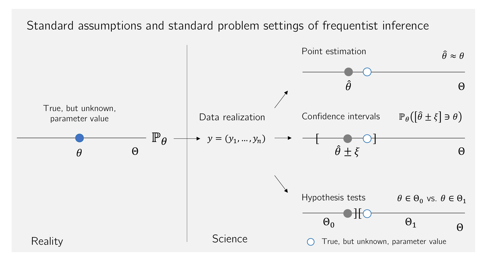

| dBDI |
|---|
| -1 |
| 3 |
| -2 |
| 9 |
| 3 |
| -2 |
| 4 |
| 5 |
| 5 |
| 1 |
| 9 |
| 4 |
30 Frequentist inference
30.1 Frequentist inference models
With the following definition, we first introduce some basic terminology for the consideration of frequentist inference models.
Definition 30.1 (Frequentist inference models) A frequentist inference model is a tuple \[\begin{equation} \mathcal{M} := (\mathcal{Y}, \mathcal{A}, \{\mathbb{P}_\theta |\theta \in \Theta\}) \end{equation}\] consisting of a data space \(\mathcal{Y}\), a \(\sigma\)-algebra \(\mathcal{A}\) on \(\mathcal{Y}\), and a set \(\{\mathbb{P}_\theta |\theta \in \Theta\}\) of probability measures on \((\mathcal{Y}, \mathcal{A})\) with at least two elements, indexed by \(\theta \in \Theta\). If \(\Theta \subset \mathbb{R}^k\), a frequentist inference model is also called a parametric frequentist inference model, and \(\Theta\) is called the parameter space of the frequentist inference model. A frequentist inference model \(\mathcal{M}\) is called a discrete model if \(\mathcal{Y}\) is finite or countable and each \(\mathbb{P}_\theta\) has a probability mass function \(p_\theta\). A frequentist inference model \(\mathcal{M}\) is called a continuous model if \(\mathcal{Y} \subset \mathbb{R}^n\) and each \(\mathbb{P}_\theta\) has a probability density function \(p_\theta\). If the data space \(\mathcal{Y}\) of a frequentist inference model \(\mathcal{M}\) is one-dimensional, for example \(\mathcal{Y} := \mathbb{R}\), one speaks of a univariate frequentist inference model. If the data space \(\mathcal{Y}\) of a frequentist inference model \(\mathcal{M}\) is multidimensional, for example \(\mathcal{Y} := \mathbb{R}^m\) for \(m > 1\), one speaks of a multivariate frequentist inference model. For a frequentist inference model \(\mathcal{M}_0 := (\mathcal{Y}_0, \mathcal{A}_0, \{\mathbb{P}_\theta^0 |\theta \in \Theta\})\), the frequentist inference model \(\mathcal{M} := (\mathcal{Y}, \mathcal{A}, \{\mathbb{P}_\theta |\theta \in \Theta\})\), for which \(\mathcal{Y}\) is the \(n\)-fold Cartesian product of \(\mathcal{Y}_0\) with itself, \(\mathcal{A}\) is the corresponding product \(\sigma\)-algebra, and \(\{\mathbb{P}_\theta |\theta \in \Theta\}\) is the corresponding set of product measures, is called a frequentist product model (belonging to \(\mathcal{M}_0\)).
Against the background of a frequentist inference model, the process of data observation is described by a random vector \(y\) that takes values in \(\mathcal{Y}\) and whose distribution corresponds to one of the principally possible distributions \(\mathbb{P}_\theta\). This random vector is called data, an observation, a measurement, or a sample. In contrast to the probability space model, in frequentist inference models one therefore explicitly considers two or more probability measures that presumably determine the distribution of \(y\). A realization of \(y\), that is, concretely available data values, is called a dataset, an observed value, a measured value, or a sample value. Expectations and (co)variances of \(y\) with respect to \(\mathbb{P}_\theta\) are usually written as \(\mathbb{E}_\theta(y)\), \(\mathbb{V}_\theta(y)\), and \(\mathbb{C}_\theta(y)\). Frequentist product models model the \(n\)-fold independent repetition of a random process. The corresponding set of random vectors \(y_1,....,y_n\) then corresponds to a set of \(n\) independent random vectors.
In a concrete data analysis problem based on a parametric frequentist product model, one assumes that the observed values of \(y_1,...,y_n\) were generated by exactly one probability measure \(\mathbb{P}_{\theta}\) with parameter \(\theta \in \Theta\). In application, this \(\theta \in \Theta\) is then called the true, but unknown, parameter value. The true, but unknown, parameter value \(\theta\) remains unknown even after any form of inference. The general aim of parametric inference procedures is therefore to make, based on an available dataset, a statement that is as valid as possible with respect to the true, but unknown, parameter \(\theta\). In this sense, the true, but unknown, parameter value is only indirectly observable. This is sometimes also expressed by saying that the true, but unknown, parameter value is unobservable or latent, that is, not immediately visible or accessible. In the mathematical analysis of inference procedures, one considers all possible true, but unknown, parameter values and therefore usually dispenses with an explicit notational designation of the true, but unknown, parameter value.
With the univariate normal distribution model and the Bernoulli model, we give two first examples of frequentist inference models.
Example 30.1 (Normal distribution model) The univariate parametric product model \[\begin{equation} \mathcal{M} := \left(\mathcal{Y}, \mathcal{A}, \{\mathbb{P}_\theta|\theta \in \Theta\}\right) \end{equation}\] with \[\begin{equation} \mathcal{Y} := \mathbb{R}^n, \mathcal{A} := \mathcal{B}(\mathbb{R}^n), \mathbb{P}_\theta^0 := N(\mu,\sigma^2), \theta := (\mu, \sigma^2), \Theta := \mathbb{R} \times \mathbb{R}_{>0}, \end{equation}\] that is, \[\begin{equation} \{\mathbb{P}_\theta|\theta \in \Theta\} := \left\lbrace \prod_{i=1}^n N(\mu,\sigma^2)|(\mu,\sigma^2)\in \mathbb{R} \times \mathbb{R}_{>0} \right\rbrace, \end{equation}\] and thus \[\begin{equation} y_1,...,y_n \sim N(\mu,\sigma^2) \mbox{ with } (\mu,\sigma^2)\in \mathbb{R} \times \mathbb{R}_{>0} \end{equation}\] is called the normal distribution model.
The normal distribution model is the basis of many popular statistical procedures that are considered integratively within the framework of the general linear model. Note that the assumption of normally distributed data is motivated by additive normally distributed error terms, as we briefly outlined in Chapter 27 and will deepen at a later point.
Example 30.2 (Bernoulli model) The univariate parametric product model \[\begin{equation} \mathcal{M} := \left(\mathcal{Y}, \mathcal{A}, \{\mathbb{P}_\theta|\theta \in \Theta\}\right) \end{equation}\] with \[\begin{equation} \mathcal{Y} := \{0,1\}^n, \mathcal{A} := \mathcal{P}\left(\{0,1\}^n\right), \mathbb{P}_\theta^0 := \mbox{Bern}(\mu), \theta:= \mu, \Theta := ]0,1[, \end{equation}\] that is, \[\begin{equation} \{\mathbb{P}_\theta|\theta \in \Theta\} := \left\lbrace \prod_{i=1}^n \mbox{Bern}(\mu)|\mu \in ]0,1[ \right\rbrace, \end{equation}\] and thus \[\begin{equation} y_1,...,y_n \sim \mbox{Bern}(\mu) \mbox{ with } \mu \in ]0,1[, \end{equation}\] is called the Bernoulli model.
30.2 Statistics and estimators
Against the background of frequentist inference models, we now formalize what is to be understood by the terms statistic and estimator.
Definition 30.2 (Statistic) Let \(\mathcal{M}\) be a frequentist inference model and let \((\Sigma,\mathcal{S})\) be a measurable space. Then a statistic is a random vector of the form \[\begin{equation} S: \mathcal{Y} \to \Sigma. \end{equation}\]
In frequentist inference, both data and statistics are therefore modeled by random vectors (in the univariate case correspondingly by random variables). However, these random vectors differ fundamentally with respect to their intuitive meaning: data represent the outcome of measurement processes under uncertainty, whereas statistics model functions of data constructed by data scientists. In the best case, these provide data-based information from which conclusions can be drawn about the latent data-generating random processes. The fact that statistics are random follows from the fact that they are applied as functions to random data (cf., for example, Theorem 21.1).
Example 30.3 (Examples of statistics) Let \(\mathcal{M}\) be the normal distribution model. Then, for example, the following random variables are statistics:
- The sample mean \[\begin{equation} \bar{y} : \mathbb{R}^n \to \mathbb{R}, y \mapsto \bar{y}(y) := \frac{1}{n}\sum_{i=1}^n y_i, \end{equation}\]
- The sample variance \[\begin{equation} s^2: \mathbb{R}^n \to \mathbb{R}_{\ge 0}, y \mapsto s^2(y) := \frac{1}{n-1}\sum_{i=1}^n (y_i - \bar{y}(y))^2, \end{equation}\]
- The sample standard deviation \[\begin{equation} s: \mathbb{R}^n \to \mathbb{R}_{\ge 0}, y \mapsto s(y) := \sqrt{s^2(y)}, \end{equation}\]
Often, as in Example 30.3, the nature of statistics as random variables or random vectors remains rather implicit in notation. This does not, however, change the fundamental fact that statistics, as functions of random-dependent values, are themselves random variables or random vectors.
Definition 30.3 (Estimator) Let \(\mathcal{M}\) be a frequentist inference model, let \((\Sigma, \mathcal{S})\) be a measurable space, and let \(\tau : \Theta \to \Sigma\) be a mapping that assigns a characteristic quantity \(\tau(\theta) \in \Sigma\) to every \(\theta \in \Theta\). Then a statistic \[\begin{equation} \hat{\tau} : \mathcal{Y} \to \Sigma \end{equation}\] is called an estimator for \(\tau\).
Estimators therefore estimate functions of the parameters of a parametric frequentist inference model. Typical examples of such functions are
- \(\tau(\theta) := \theta\) for the estimation of the parameter \(\theta\),
- \(\tau(\theta) := \theta_i\) with \(\theta \in \mathbb{R}^d, d > 1\) for the estimation of a component of the parameter \(\theta\),
- \(\tau(\theta) := \mathbb{E}_\theta(y_1)\) for the estimation of the expectation,
- \(\tau(\theta) := \mathbb{V}_\theta(y_1)\) for the estimation of the variance.
In the case \(\tau(\theta) := \theta\), that is, the estimation of parameters, one usually writes \(\hat{\theta}\). Note that estimators take numerical values in \(\Sigma\), in the estimation of parameters, for example, in \(\Theta\). They are therefore also called point estimators. This is a characteristic of frequentist inference procedures. Within Bayesian inference, estimators can also take generalized forms; for example, probability distributions are also considered as estimators there. Finally, it should be noted that the definition of an estimator makes no statement whatsoever about the validity of estimators. Not every estimator is therefore per se a good estimator. In frequentist inference, one therefore additionally defines estimator quality criteria, as will be presented in detail in the chapter on point estimation.
Example 30.4 (Estimators in the normal distribution model) Let \(\mathcal{M}\) be the normal distribution model. Then the sample mean \(\bar{y} : \mathbb{R}^n \to \mathbb{R}\) is an estimator for \[\begin{equation} \tau: \mathbb{R} \times \mathbb{R}_{>0} \to \mathbb{R}, (\mu, \sigma^2) \mapsto \tau(\mu,\sigma^2) := \mu. \end{equation}\] Likewise, \(\bar{y}\) is an estimator for \[\begin{equation} \tau: \mathbb{R} \times \mathbb{R}_{>0} \to \mathbb{R}, (\mu, \sigma_2) \mapsto \tau(\mu,\sigma^2) := \mathbb{E}_{\mu,\sigma^2}(y_1). \end{equation}\] Furthermore, the constant function \[\begin{equation} \hat{\tau} : \mathbb{R}^n \to \mathbb{R}, y \mapsto \hat{\tau}(y) := 42 \end{equation}\] is an estimator for \[\begin{equation} \tau : \mathbb{R} \times \mathbb{R}_{>0} \to \mathbb{R}_{>0}, (\mu, \sigma_2) \mapsto \tau(\mu,\sigma^2) := \sigma^2. \end{equation}\] The fact that a function \(\hat{\tau} : \mathcal{Y} \to \Sigma\) is an estimator therefore by no means implies that it is a good estimator.
30.3 Standard assumptions and standard problem settings
We summarize the concepts considered so far in this chapter once again under the term data-analytic standard assumptions of frequentist inference (cf. also Figure 30.1). To this end, let \(\mathcal{M}\) be a univariate parametric frequentist product model, and let \(y_1,...,y_n \sim \mathbb{P}_\theta\) be the random variables of the sample, which we may combine, for example, in a random vector \(y := (y_1,...,y_n)\). Of a concretely available dataset, which we may combine, for example, in an \(n\)-dimensional real vector, it is then assumed that it is one of the possible realizations of \(y\) on the basis of a distribution \(\mathbb{P}_\theta\) with true, but unknown, parameter \(\theta\). From a frequentist perspective, one can repeat the observation of a dataset infinitely often and evaluate estimators or statistics for each data realization, for example the sample mean:
Against this background, frequentist inference usually treats the following standard problem settings:
Point estimation. The aim of point estimation is, on the basis of observed data, to give a precise guess for the true, but unknown, parameter value that is as good as possible in the frequentist sense.
Confidence interval determination. The aim of confidence interval determination is, based on the assumed data distribution and the observed data, to give by means of interval estimation a guess for the true, but unknown, parameter value that is as certain as possible, even if often imprecise.
Hypothesis tests. The aim of frequentist hypothesis testing is, based on the assumed distribution of the data, to decide in a form that is as reliable as possible whether a true, but unknown, parameter value lies in one of two mutually exclusive subsets of the parameter space.

Procedures for solving these problem settings are called frequentist inference procedures. To assess the quality of frequentist inference procedures, one usually considers the distributions of estimators and statistics under the assumption of \(y = (y_1,...,y_n) \sim \mathbb{P}_\theta\). One asks, for example, about the distribution of the realizations sketched above, \(\bar{y}^{(1)}\), \(\bar{y}^{(2)}\), \(\bar{y}^{(3)}\), \(\bar{y}^{(4)}\), …, that is, about the distribution of the random variable \(\bar{y}_n\). If an inference procedure is considered “good” on the basis of these assumptions, this merely means that the procedure is good “on average when applied frequently”. In an individual case, that is, in the normal application case of a single available dataset, the inference procedure may also be “bad”. We will deepen this way of thinking especially in the context of point estimation and confidence intervals. Similarly, frequentist inference assesses the strength of empirical evidence against the background of the assumed distribution of estimators and statistics in scenarios in which the effect of interest is assumed not to exist, so-called null hypotheses. We clarify this way of thinking in the context of considering hypothesis tests.
Example 30.5 (Application example) For a first application example of frequentist inference procedures, we consider the evidence-based evaluation of psychotherapy for depression. To this end, let the dataset shown in Table 41.1 be given, consisting of BDI-II score differences (dBDI; Beck (1961), Beck et al. (1996)) collected from \(n = 12\) patients before and after therapy. The dBDI values are intended to reflect the reduction of the patients’ BDI-II scores over the period of therapy. High positive values of dBDI therefore correspond to a strong decrease in the depressive symptomatology quantified by the BDI-II score, values around zero correspond to no substantial change, and negative values correspond to an increase in the depressive symptomatology quantified by the BDI-II score.
For each of the \(n := 12\) dBDI values, we now use the model \[
y_{i} := \mu + \varepsilon_{i} \mbox{ with } \varepsilon_{i} \sim N(0,\sigma^2) \mbox{ i.i.d. for } i = 1,...,n
\tag{30.1}\] as a basis. Thus, the dBDI value of the \(i\)th patient is explained with the help of a BDI-II score reduction \(\mu \in \mathbb{R}\) that is identical across the group of patients and a patient-specific normally distributed BDI-II score reduction deviation \(\varepsilon_{i}\), and it is assumed that these reduction deviations do not influence one another between patients. Intuitively, it is therefore assumed that the therapy has an effect that leads to the same BDI-II score reduction \(\mu\) in all patients, and that the differences in the observed dBDI values can be explained by a large number of further random processes that are normally distributed and centered in the aggregate. Alternatively, one may understand these deviations as realizations of the uncertainty with which the model in Equation 30.1 is associated.
It then follows directly from Equation 30.1 that \[\begin{equation} y_1,...,y_n \sim N(\mu,\sigma^2), \end{equation}\] because for \(i = 1,...,n\) and with \[\begin{equation} y_i = f(\varepsilon_i) \mbox{ with } f : \mathbb{R} \to \mathbb{R}, e_i \mapsto f(e_i) := e_i + \mu. \end{equation}\] it holds for the probability density functions of the \(y_i\) that \[\begin{align} \begin{split} p_{y_i}(y_i) & = \frac{1}{|1|} p_{\varepsilon_i}\left(\frac{y_i - \mu}{1} \right) \\ & = N\left(y_i - \mu; 0, \sigma^2\right) \\ & = \frac{1}{\sqrt{2\pi\sigma^2}}\exp\left(-\frac{1}{2\sigma^2}(y_i - \mu - 0)^2 \right) \\ & = \frac{1}{\sqrt{2\pi\sigma^2}}\exp\left(-\frac{1}{2\sigma^2}(y_i - \mu)^2 \right) \\ & = N(y_i; \mu,\sigma^2) \end{split} \end{align}\]
The standard problem settings of frequentist inference then lead, in this application scenario, to the following questions, which we will take up again in the chapters on point estimation, confidence interval determination, and hypothesis test evaluation, respectively:
What are sensible guesses for the true, but unknown, parameter values \(\mu\) and \(\sigma^2\), that is, the true, but unknown, expectation of the BDI-II score reduction and its true, but unknown, variance? How good, then, is the therapy in this quantitative sense, if we try to take into account the patient-dependent deviations, and how large is the uncertainty inherent in the data generation?
How can a maximally certain estimate of the true, but unknown, expectation of the BDI-II score reduction be achieved in the sense of interval estimation? How imprecise must such an estimate be in order to be as reliable as possible?
Do we sensibly decide in favor of one of the hypotheses that the therapy is not effective (\(\mu = 0\)), or that it is effective, for example, in a positive (\(\mu > 0\)) or also in a negative sense (\(\mu < 0\))? And if we were to decide in favor of one of these hypotheses, with what error probability would we do so? How high, then, is the uncertainty inherent in such a decision?
Study questions
- State the definition of a parametric frequentist inference model.
- What is the difference between a univariate and a multivariate product model?
- State the definition of the normal distribution model.
- State the definition of the Bernoulli model.
- State the definition of the term statistic.
- State the definition of the term estimator.
- Explain the standard problem settings of frequentist inference.
- Explain the standard assumptions of frequentist inference.
Study question answers
- See Definition 30.1.
- See Definition 30.1.
- See Example 30.1.
- See Example 30.2.
- See Definition 30.2.
- See Definition 30.3.
- See Section 30.3.
- See Section 30.3.
Beck, A. T. (1961). An Inventory for Measuring Depression. Archives of General Psychiatry, 4(6), 561. https://doi.org/10.1001/archpsyc.1961.01710120031004
Beck, A. T., Steer, R. A., Ball, R., & Ranieri, W. F. (1996). Comparison of Beck Depression Inventories-IA and-II in Psychiatric Outpatients. Journal of Personality Assessment, 67(3), 588–597. https://doi.org/10.1207/s15327752jpa6703_13